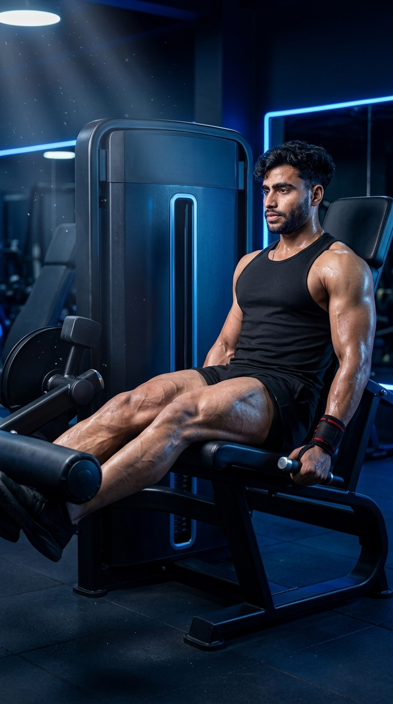

Primary Muscle
Quadriceps
Isolate Your Quadriceps for Bigger, Stronger, and More Defined Legs
The Leg Extension is one of the best isolation exercises for strengthening and developing the quadriceps muscles. Performed on a leg extension machine, this movement targets the front of the thighs through a controlled range of motion while placing minimal stress on the hips. It's an excellent exercise for increasing muscle definition, improving knee extension strength, enhancing athletic performance, and finishing leg workouts with focused quadriceps training.

Quadriceps
Leg Extension Machine
Beginner
Isolation
Discover which muscles power the Leg Extension and how the supporting muscle groups help stabilize the movement, improve knee strength, enhance quadriceps development, and build stronger, more defined legs through focused isolation training.
Knee Extension & Front Thigh Development
Assist Hip Stability During Knee Extension
Stabilizes the Ankle Throughout the Movement
Maintains Upright Posture & Pelvic Stability
Discover how the Leg Extension strengthens the quadriceps, improves knee extension, enhances lower-body muscle definition, supports athletic performance, and helps build stronger, healthier legs through targeted isolation training.
The Leg Extension isolates the quadriceps more effectively than most lower-body exercises, promoting muscle growth, strength, and improved thigh definition.
Strengthening the muscles responsible for extending the knee helps improve performance in walking, running, jumping, squatting, and many athletic movements.
Because it directly targets the front of the thighs, the Leg Extension is excellent for improving quadriceps shape, separation, and overall leg aesthetics.
Strong quadriceps help stabilize the knee joint, improve movement control, and support healthy joint function when performed with proper technique and appropriate resistance.
Stronger quadriceps contribute to more powerful sprinting, jumping, cycling, and lower-body force production during sports and functional activities.
Unlike compound leg exercises, the Leg Extension allows you to focus almost entirely on the quadriceps, making it an excellent finishing exercise for maximizing leg development.
Follow these step-by-step instructions to perform the Leg Extension with proper machine setup, controlled movement, and full quadriceps activation to maximize muscle growth, improve knee extension strength, and reduce the risk of injury.
Sit on the leg extension machine with your back firmly against the pad. Position the roller pad just above your ankles and align your knees with the machine's pivot point.
Proper machine alignment improves comfort and ensures the quadriceps perform most of the work.
Exhale as you extend your knees until your legs are almost straight. Focus on squeezing your quadriceps at the top without locking your knees.
Lift the weight smoothly rather than using momentum to maximize muscle activation.
Hold the top position for one to two seconds while squeezing your quadriceps as hard as possible before beginning the lowering phase.
A brief pause increases muscle tension and improves quadriceps engagement.
Slowly lower the weight back to the starting position until your knees are comfortably bent, maintaining constant tension on the quadriceps throughout the movement.
Control the lowering phase instead of letting the weight stack drop quickly.
Complete the desired number of repetitions using a slow, controlled tempo. Maintain proper posture, full range of motion, and consistent muscle tension throughout every repetition.
Prioritize perfect technique and muscle control before increasing the training load.
Avoid these common technique mistakes to maximize quadriceps development, protect your knees, and perform the Leg Extension safely and effectively.
Using momentum instead of controlled movement reduces quadriceps activation and places unnecessary stress on the knee joint.
Lift and lower the weight slowly while keeping constant tension on the quadriceps.
Snapping the knees into full extension places excessive stress on the knee joint and reduces exercise control.
Stop just short of locking your knees while maintaining a strong quadriceps contraction.
A poorly adjusted seat or roller pad changes the movement mechanics, decreases muscle activation, and may cause unnecessary joint discomfort.
Align your knees with the machine's pivot point and position the pad just above your ankles before starting each set.
Choosing more weight than you can control often shortens the range of motion, encourages momentum, and reduces the effectiveness of the exercise.
Select a weight that allows full range of motion, smooth repetitions, and complete control from start to finish.
Apply these expert coaching cues to maximize quadriceps activation, improve knee extension mechanics, and perform every Leg Extension with better control, muscle tension, and proper technique.
Adjust the seat so your knees align with the machine's pivot point and position the roller pad just above your ankles for smooth, comfortable movement.
Proper machine setup improves both safety and quadriceps activation.
Lift the weight smoothly and lower it slowly. Avoid using momentum so your quadriceps stay under constant tension throughout the exercise.
Slow, controlled repetitions build more muscle than fast, uncontrolled ones.
Pause briefly at the top of each repetition and contract your quadriceps as hard as possible before lowering the weight under control.
A one-second squeeze increases muscle activation and improves mind-muscle connection.
Use a resistance that allows a full range of motion with perfect form instead of sacrificing technique to lift heavier weights.
Perfect technique always produces better long-term results than lifting heavier with poor form.
Progress from mastering proper machine setup and controlled repetitions to building stronger quadriceps with heavier resistance while maintaining excellent technique and full range of motion.
Begin with a light weight while learning the correct seat position, knee alignment, and controlled movement pattern before increasing resistance.
Machine setup, posture, alignment, and full range of motion.
Perform slow, controlled repetitions with a brief pause at the top while maintaining constant tension on the quadriceps throughout the exercise.
Tempo, muscle control, and mind-muscle connection.
Once your technique is consistent, progressively increase the weight while maintaining smooth, controlled repetitions and a full range of motion.
Progressive overload, quadriceps strength, and muscle hypertrophy.
Challenge yourself with advanced methods such as slower eccentric repetitions, pause reps, single-leg leg extensions, or drop sets to maximize muscle growth and endurance.
Maximum quadriceps development, muscular endurance, and long-term progression.
Find answers to common questions about Leg Extension technique, muscles worked, knee safety, training frequency, and how to maximize quadriceps development with this effective isolation exercise.
The Leg Extension primarily targets the quadriceps, including the rectus femoris, vastus lateralis, vastus medialis, and vastus intermedius. It is one of the best isolation exercises for building the front of the thighs.
Yes. When performed with proper machine setup, controlled movement, and an appropriate weight, the Leg Extension is generally safe for healthy individuals. Avoid excessive weight and forcefully locking your knees.
Yes. The Leg Extension is beginner-friendly because the machine provides stability, making it easier to learn proper quadriceps activation and movement control.
For muscle growth, perform 3–4 sets of 10–15 repetitions. For muscular endurance, use lighter weights for 15–20 repetitions while maintaining strict technique.
No. Extend your legs until they are almost straight, then squeeze your quadriceps without forcefully locking the knees. This helps maintain muscle tension while reducing unnecessary joint stress.
Leg Extensions are commonly performed after compound exercises like squats or leg presses to fully fatigue the quadriceps. They also work well during rehabilitation or as a focused quadriceps isolation exercise.
Explore other leg exercises that complement the Leg Extension and help you build stronger quadriceps, glutes, hamstrings, and overall lower-body strength through both compound and isolation movements.


Continue building stronger legs with step-by-step exercise guides covering proper technique, muscles worked, common mistakes, expert coaching tips, and progression strategies for every fitness level.